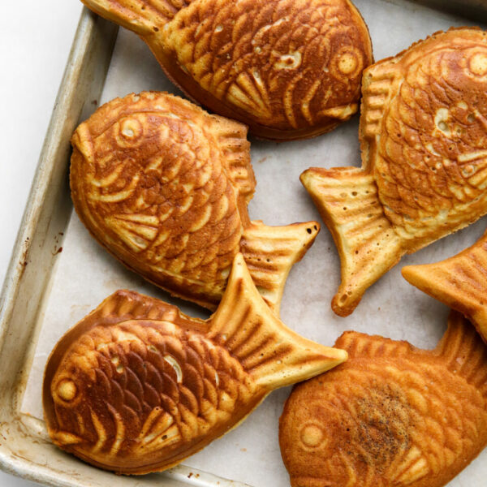

Cookie Butter Taiyaki

Description
A taiyaki is a fish-shaped waffle that's usually filled with sweetened red beans, though custard, cheese, and sweet potato fillings are also commonly found.
Cookie butter is actually a perfect filling for taiyaki — it's sweet, has a great consistency, and most importantly tastes like nostalgia, which is exactly what I want to experience when eating a taiyaki.
Ingredients
- 1 cup all-purpose flour
- 3 tbsp cornstarch
- 2 tbsp granulated sugar
- 1 tsp baking powder
- 1 tsp baking soda
- 1/4 tsp salt
- 3/4 cup whole milk
- 1 large egg
- 1 tsp vanilla
- 5 tbsp cookie butter
Steps
- In a medium bowl, whisk together flour, cornstarch, sugar, baking powder, baking soda, and salt. Set aside.
- In a large measuring cup, whisk together milk, eggs, and vanilla.
- Add the wet ingredients to the bowl of dry ingredients. Mix until no streaks of flour remain.
- Heat up taiyaki pan over medium heat. Once both side of the pan is hot, grease the inside of the pan with vegetable oil.
- Pour batter into one side of the taiyaki pan until the 3/4 full. Add one table spoonful of cookie butter to the centre (the "belly" of the fish) and cover the filling with a bit more batter. Close the taiyaki pan and flip it, so the batter inside covers the entire pan.
- Cook taiyaki on each side over medium heat for about 3 minutes, until it is golden and releases from the pan easily. If taiyaki is sticking to the pan, cook the taiyaki on the same side for an addition 30 seconds – 1 minute.
- Remove from pan and transfer to cooling rack. Repeat will remaining batter and filling.
Return to Home Page
Recipe Credits: Constellation Inspiration